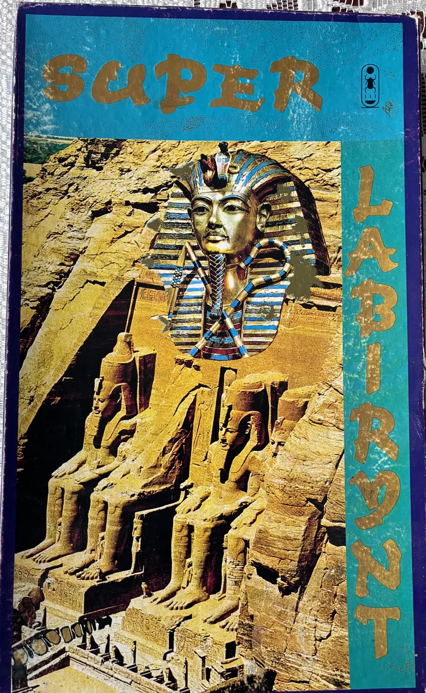

Starożytne skarby czekają
Odnajdź drogę
przez labirynt.
Przesuwaj korytarze, odkrywaj skarby i wróć bezpiecznie do swojej bramy.

ORYGINALNA GRA
TOWARZYSKA
TOWARZYSKA
2–4 graczy
7 × 7 pól
24 skarby
Plansza wyprawy
Wielki labirynt
Przygotuj ruch
01
Wybierz strzałkę, aby wsunąć kafelek do labiryntu.
WSUŃ KORYTARZ